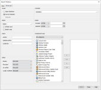

Advanced Search
The Advanced Search option allows the user to search component details by the following:
Words, Phrases, Dates, Users, Component types, the contents of standalone scripting components and Component states.
Advanced Search can be opened from the Main menu bar and has a Basic and an Advanced tab. The option can also be activated by using Ctrl+Shift+F.
The Basic tab can be used to search for a word or phrase or for a whole word and to match the case. The search scope can be defined to search within all open solutions or the current solution only.
{kind=link}
By selecting the Advanced tab a more advanced search can be carried out. 
{kind=link}
The Advanced Search can be defined in a further seven ways, enabling the user to search by:
-
Scope - limit the search to the solution loaded or to all the solutions that are open in the Studio
-
Contains - search for a word contained in standalone scripting components, for example Derived Data Script and Policy Rules for example
-
Name - search for a word or phrase or for a whole word and to match the case
-
Date - define the search by creation or updated date
-
Users - only search for items created, updated or locked by specific users
-
Component type - carry out the search only within specific components
-
Other - carry out the search in broken, recycled (components that have been moved to the Recycle Bin), those that have conflict and have only been modified in the users domain (locally modified)
| The Advanced Search combines these selections, using AND, to produce the Search results. |
Advanced Search Results
The search results from an Advanced Search (basic and advanced) are displayed in the Search Results window located in the Output area of the user interface.

Each search that is carried out will be displayed in its own tab within the Search Results window.
| The Advanced Search results opens a separate tab for each solution when the Open solutions option is selected. |
Show Filter Bar Use this button to display or remove the Filter bar at the bottom of the window. The filter field can be used to filter the content of the Search Results window for specific words.
{kind=link}
Actions can be performed from within the Search Results window by right clicking on a component row in the window. The actions available depend upon the component type. Available actions are the same as the actions available in the Explorer window. Double clicking on a component in the Component column will open the component in the Main editor.
The Search Results window can be customised by the user.
The column order can be changed by clicking on a column header and dragging into the preferred place.
 Change visible columns: - select to access the Change Visible Columns dialog and to choose which columns to view. This icon is only visible in the window when the Filter field is visible. This is also available on right click in the column header.
Change visible columns: - select to access the Change Visible Columns dialog and to choose which columns to view. This icon is only visible in the window when the Filter field is visible. This is also available on right click in the column header.
The following columns are available:

Component: This column displays the Component name.
 Area state: This column displays the domain that the component sits in.
Area state: This column displays the domain that the component sits in.  indicates that the component sits in a user domain.
indicates that the component sits in a user domain.  indicates that the component sits in a shared domain.
indicates that the component sits in a shared domain.
Author: This column displays the author/creator of the component.
 Broken state: This column displays the broken state of a component. indicates that there are no publishing rules defined between the component and a dependant component. If the field is empty, the component is not broken.
Broken state: This column displays the broken state of a component. indicates that there are no publishing rules defined between the component and a dependant component. If the field is empty, the component is not broken.
 Component state: This column displays the component state. A
Component state: This column displays the component state. A  indicates a new component. indicates a modified component. If the field is empty, the component is unmodified.
indicates a new component. indicates a modified component. If the field is empty, the component is unmodified.
 Conflict state: This column displays the conflict state of the component. It indicates that there is a conflict. If the field is empty, there is no conflict.
Conflict state: This column displays the conflict state of the component. It indicates that there is a conflict. If the field is empty, there is no conflict.
Creation date: This column displays the date the Component was created.
 Favourite state: This column displays any components that the user has marked as a favourite.
Favourite state: This column displays any components that the user has marked as a favourite.
 Lock state: This column displays the Lock/Unlock status of the component. indicates that the component is locked by the user who is currently logged in.
Lock state: This column displays the Lock/Unlock status of the component. indicates that the component is locked by the user who is currently logged in.  indicates that the component is locked by another user. If the field is empty, the component is not locked.
indicates that the component is locked by another user. If the field is empty, the component is not locked.
Locked by: This column displays the user name of the user currently locking the component.
Name: This column displays the Name that has been given to the component.
Path: This column allows the user to display the full path of a component.
 Revision shared area: This column displays the version number of the component on the shared domain.
Revision shared area: This column displays the version number of the component on the shared domain.
 Revision user area: This column displays the version number of the component on the user domain.
Revision user area: This column displays the version number of the component on the user domain.
Type: This column displays the Component Type (Decision Process Flow, Call Interface Manager, etc.)
Update Author: This column displays the author responsible for the latest update of the component.
Update date: This column displays the last date that the component was updated.
To search for a word or phrase using Basic Advanced Search
- Load a solution.
- Click on Edit in the Main menu bar and select Advanced Search.
The Search Window dialog, with the Basic tab selected, will be displayed. - Type a name or word in the Name text field.
- To define a search on the whole word or a search to match case, ensure that the appropriate tick box is selected.
- To define the search scope, ensure that either the Open Solutions or the Current Solution tick box is selected.
- Click on the Find button.
| You will be unable to carry out a search until you have loaded a solution. |
| You may continue to a further Advanced Search by selecting the Advanced tab in the Search Window dialog. |
The search results will be displayed in the Search Results window, located in the output area of the user interface.
To search for a word or phrase using the Advanced Search
- Load a solution.
- Click on Edit in the Main menu bar and select Advanced Search.
The Search Window dialog will be displayed. - Select the Advanced tab.
- To define the search scope, ensure that either the Open Solutions or the Current Solution tick box is selected.
- Type text in the Contains field to search for that text in a standalone scripting component.
| You will be unable to carry out a search until you have loaded a solution. |
| At least 3 symbols must be typed in the Contains field for the value to be valid for search. |
- Type a name or word in the Name text field.
- To define a search on the whole word or a search to match case, ensure that the appropriate tick box is selected.
- To define the search date by Created date, in the Dates area of the dialog, select the condition from the Created drop-down list and then either type a date in the free text field or select a date from the date picker.
- To define the search date by Updated date, in the Dates area of the dialog, select the condition from the Updated drop-down list and then either type a date in the free text field or select a date from the date picker.
- To define the search by users (Author, Update author or Locked by user), in the Users area of the dialog, type the user name in the appropriate free text field.
- To define the search by Component type, in the Component Type area of the dialog, select the required category from the drop-down list. Use the buttons in the middle to select components you wish to be searched.
> use this to add a selected component from the left field to the allowed component types
>> use this to add all components from the left field to the allowed component types
< use this to remove a selected component from the allowed component types
<< use this to remove all components from the allowed component types
- To define other criteria such as broken, recycled (components that have been moved to the Recycle Bin), conflict and locally modified components, in the Others area of the dialog, select the appropriate condition from the drop-down list for any fields you wish to search for.
- Click on the Find button.
| The Advanced Search combines these selections, using AND, to produce the Search results. |
| You may return to the Basic Advanced Search at any time, by clicking on the Basic tab in the Search Window dialog. |
The search results will be displayed in the Search Results window, located in the output area of the user interface.
The Quick Search option is also available to the user.